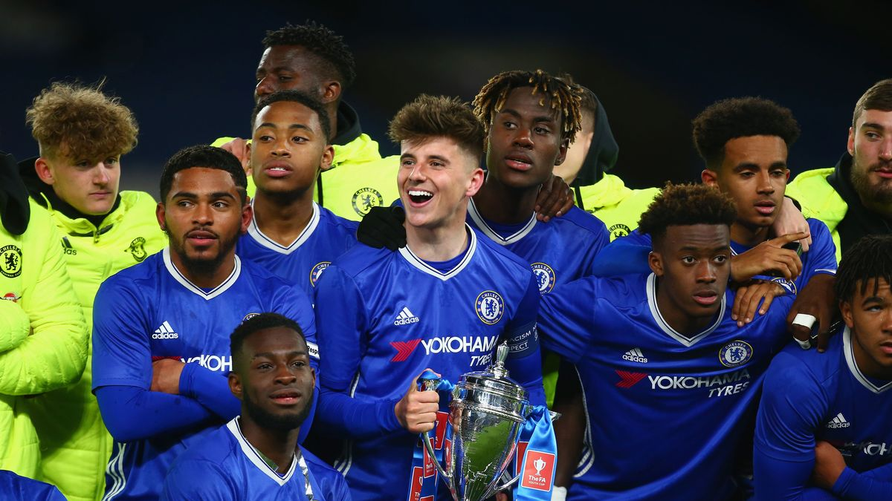
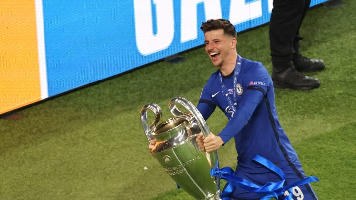

MASON MOUNT
MASON MOUNTเขามักลงเล่นในตำแหน่งกองกลางตัวรุก สามารถยืนเป็นมิดฟิลด์ตัวกลาง และมีความแข็งแกร่งในการเล่นสไตล์บ็อกซ์ ทู บ็อกซ์
เมาท์ลงเล่นให้ทีม U-18 ไปทั้งหมด 7 นัดในฤดูกาล 2014/15 แม้ว่าจะได้รับบาดเจ็บในวันแรกของช่วงพรีซีซั่น แต่เขาก็ยังมีฤดูกาลเดบิวต์ที่ดีอยู่
เขาทำประตูได้ในเกมที่ชนะแมนฯ ยูไนเต็ด 5-1 ในเอฟเอ ยูธ คัพ และมีบทบาทสำคัญทั้งในรอบรองชนะเลิศและชิงชนะเลิศ ในศึกยูฟ่า ยูธ ลีก โดยแอสซิสต์สองประตูในเกมรอบสี่ทีมที่ชนะอันเดอร์เลชต์ 3-0 ช่วงปลายสัปดาห์นั้น เขาทำประตูสำคัญในการแข่งขันยูธ คัพ รอบชิงชนะเลิศนัดแรกที่ออกไปเยือนแมนเชสเตอร์ ซิตี้ โดยพวกเราป้องกันแชมป์เอาไว้ได้สำเร็จ
ฤดูกาล 2016/17 เมาท์ลงเล่นเป็นตัวหลักของทีมชุดพัฒนาการ ทำประตูแรกได้ในเกมที่พบกับลิเวอร์พูลช่วงเดือนสิงหาคม เขาสวมปลอกแขนกัปตันทีมชุดคว้าแชมป์ยูธ คัพ สมัยที่สี่ติดต่อกัน โดยทำแฮตทริกได้ในเกมรอบ 4 ที่บุกชนะเบอร์มิ่งแฮม ผลงานเตะตาของกองกลางรายนี้ทำให้เขาได้รับคำชื่นชมมากมาย เจ้าตัวส่งท้ายซีซั่นอันน่าประทับใจด้วยการแอสซิสต์ประตูชัยของทีมชาติอังกฤษ ช่วยให้ทรี ไลอ้อนส์ คว้าแชมป์การแข่งขันฟุตบอลชิงแชมป์แห่งชาติยุโรปของรุ่นอายุไม่เกิน 19 ปี
ความสามารถในการเล่นลูกตั้งเตะของเขา สร้างประโยชน์ให้กับสิงห์บลูส์ โดย เคิร์ต ซูม่า โขก 2 ลูกเตะมุมที่สมบูรณ์แบบจาก เมาท์ ในชัยชนะเหนือเบิร์นลี่ย์และลีดส์ ยูไนเต็ด ในขณะ เขาก็ได้โชว์วิชั่นการจ่ายบอลที่น่าทึ่ง ในจังหวะที่ คัลลั่ม ฮัดสัน-โอดอย ยิงใส่แรนส์ในเกมเยือน โดย เมาท์ แย่งบอลมาได้ จากนั้นก็ส่งแทงยาวไปให้สหายร่วมค็อบแฮมหลุดไปซัดตุงตาข่าย ผลงานของมิดฟิลด์รายนี้ยังถูกแสดงให้เห็นออกมาเรื่อย ๆ ทั้งในเกมรุกและเกมรับที่พัฒนาแบบไม่หยุด
ภายหลังจากที่ชนะใจของ ทูเคิ่ล ได้อย่างรวดเร็ว เมาท์ ยังคงเป็นตัวหลักในทีม โดยปรับตัวเข้ากับบทบาทใหม่ในระบบ 3-4-2-1 ของกุนซือชาวเยอรมัน การเพรสซิ่งที่ชาญฉลาดและเข้มข้นของเขาจากแดนหน้า ได้รับคำชมจากเจ้านายคนใหม่ ทำให้เขาได้ออกสตาร์ตในบทบาท 'ฟอลส์ ไนน์' ในเกมที่พวกเราบุกชนะท็อตแน่ม 1-0
ไม่ต้องสงสัยเลยว่าความพยายามของเขาในเวทียุโรป ได้ตราตรึงอยู่ในใจแฟนบอลเชลซี เมื่อเหล่าสาวกของเราได้โหวตให้เขาเป็นนักเตะยอดเยี่ยมแห่งปีของสโมสร โดยเฉพาะอย่างยิ่งกับประตูในจังหวะสวนกลับเร็วเกมพบเรอัล มาดริด ที่ช่วยพวกเราตอกตะปูปิดฝาโลง "ราชันชุดขาว" และผงาดเข้าสู่รอบชิงชนะเลิศได้สำเร็จ ในเลกแรกที่เมืองหลวงของสเปน เมาท์ ลงสนามครบ 100 นัดให้กับเชลซีอีกด้วย
ในการปิดฉากฤดูกาลที่เขามีอิทธิพลสำคัญภายใต้สีเสื้อสิงห์บลูส์ การผ่านบอลของเขาในรอบชิงชนะเลิศแชมเปี้ยนส์ ลีก ทำให้ ไค ฮาแวร์ตซ์ หลุดเข้าไปยิงประตูโทนของเกม คลาส, แคแร็คเตอร์ และความนิ่ง เมาท์ ได้แสดงให้เห็นทุกอย่างตลอดฤดูกาลที่เปี่ยมไปด้วยขาขึ้น ขาลง และความสำเร็จ เขาปิดฉากซีซั่นด้วยการทำประตูและแอสซิสต์รวม 21 ลูก ผลงานที่สำคัญในตัวเขาได้รับการโหวตจากแฟนบอลให้คว้ารางวัลนักเตะยอดเยี่ยมของสโมสรประจำฤดูกาล 2020/21 ไปครอบครอง
ฟอร์มอันน่าประทับใจของ เมาท์ ในศึกพรีเมียร์ ลีกกับเชลซีช่วงฤดูกาล 2019/20 ทำให้เขาได้ลงประเดิมสนามให้กับทีมชาติอังกฤษชุดใหญ่ที่เวมบลีย์ โดยเป็นตัวสำรองเกมที่สิงโตคำรามเอาชนะบัลแกเรีย 4-0 ในการแข่งขันฟุตบอลยูโร 2020 รอบคัดเลือก หลังเปิดตัวกับทีมชาติไปแล้ว เขาได้ลงสนามทุกนัดตั้งแต่นั้นในซีซั่นที่ประสบความสำเร็จ และทำประตูแรกให้กับทีมชาติในแมตช์ที่เอาชนะคอซอวอ 4-0
เขาพิสูจน์ตัวเองว่าเป็นส่วนสำคัญของทีมชาติอังกฤษในช่วงเริ่มต้นของการแข่งขันยูโร 2020 ที่ล่าช้า และลงสนามทุกนาทีของ 2 นัดแรกในรอบแบ่งกลุ่ม ช่วยชาติคว้าตั๋วผ่านเข้าสู่รอบน็อคเอาต์ อย่างไรก็ตาม ความจำเป็นในการต้องกักตัวภายใต้กฎการป้องกันโควิด ทำให้เขาพลาดลงสนามสองนัดถัดไป แต่ยังคงสานต่อฟอร์มอันยอดเยี่ยมด้วยการแอสซิสต์ประตูสุดท้ายให้เพื่อนในเกมถล่มยูเครนสี่ลูก จากนั้นลงเป็นตัวจริงทุกนัดซึ่ง "สิงโตคำราม" ผ่านไปถึงรอบชิงชนะเลิศ ก่อนพ่ายให้กับอิตาลีด้วยการดวลจุดโทษตัดสิน
SOCIAL MEDIA
 |
|